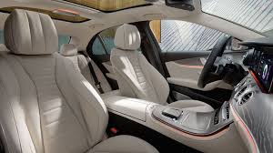
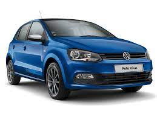

Cars for sale
Mercedes-Benz
The comfort, the premium upholstery, the plush carpeting, polished wood trim, sleek styling, LED mood lighting, an awesome array of information and entertainment options; even the scent signals that this vehicle is special. If you demand the finer things in life your automobile should be a Mercedes-Benz.
The Mercedes-Benz Brake Assist System (BAS®) is an autonomous emergency braking system that senses when another vehicle or pedestrian is too close to the front of your vehicle relative to your speed; Brake Assist can help with braking or perform emergency braking when the driver fails to step on the brakes in time
A well-maintained Mercedes with a gasoline engine has been known to last upwards of 250,000 miles with proper maintenance. Mercedes diesel engines last even longer
Mercedes-Benz cost R856,080.00
Volkswagen Polo vivo

The Vivo has been made to be super practical. Luggage space in the boot is 270 litres and can extend to 635 litres with the simple one-piece folding of the rear bench. ... In the line-up is a two-door 55 kW/132 Nm 1.4 litre engine, and a 63 kW/132 Nm 1.4 litre engine. At the top-end is a 77 kW 1.6 litre engine.
The Polo Vivo is smooth on paved road, soaks up bumps and undulations with ease and is a breeze to drive. (It's not great on gravel, though.) Its engine and comfort-orientated performance make it well suited for small families, students and is an ideal work horse for those travelling on business
the Volkswagen Polo lasts over six years without any trouble, including the 2 years warranty promised by the company.
Volkswagen Polo vivo cost R232,500.00
Toyota Yaris


The Toyota Yaris is a viable option for long drives. The subcompact car has many benefits and perks for a low-cost vehicle and is a suitable option for small groups to travel with
Toyota the most fun to drive car in the class. Powered by a lively 1.5-liter four-cylinder engine, the Yaris is good for 106 horsepower and 103 pound-feet of torque
The Ground clearance of Toyota Yaris is 152 mm. This is a wonderful product with great mileage and the best in class engine
Toyota Yaris cost R315,000
Toyota Corrolla


The base engine is a 132-hp 1.8L 4-cylinder DOHC, model 2ZR-FE. It's a proven simple and reliable motor. With good maintenance, it can last for well over 200K miles.
With regular service and maintenance, the Toyota Corolla has a life expectancy of up to 10 years or 300,000 miles.
Toyota Corrolla are reliable because they don't push the engine at it's peak which gives engine a long span and Toyota doesn't add a lot of tech and gimmick which also further improves the reliability of their car
Toyota Corolla cost R178 600.
Toyota Fortuner


Driving fortune is very good long drive no back pain etc it's very comfortable for long driven all.
The estimated maintenance cost of Toyota Fortuner for 5 years is R 31,722. The first service after 10000 km is free of cost
The Toyota Fortuner can achieve a top speed of 176kmph.
Toyota Fortuner cost R616 700